4 Таблиці
Таблиця 4.1 – Властивості границь
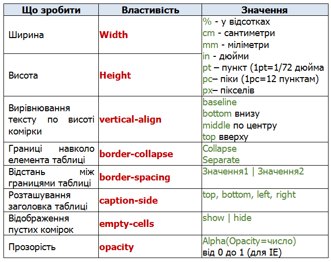
Приклад 4.1. За допомогою селекторів table – вказати ширину таблиці 50% та встановити її по центру; th – кольорова заливка, текст білий.
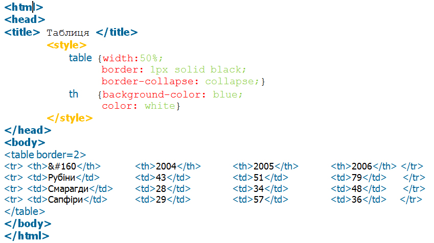
Результат:
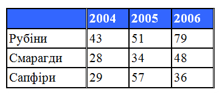
Приклад 4.2. Властивості таблиці
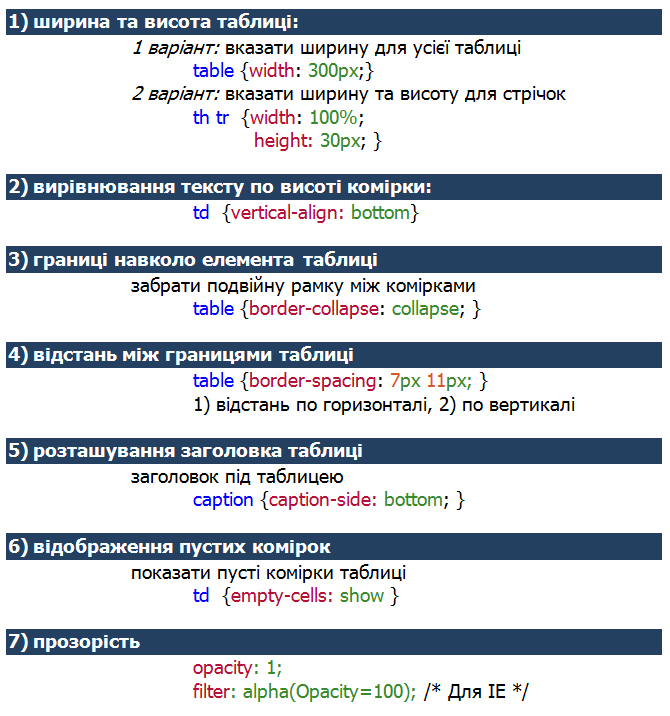
Таблиця 4.1 – Властивості границь
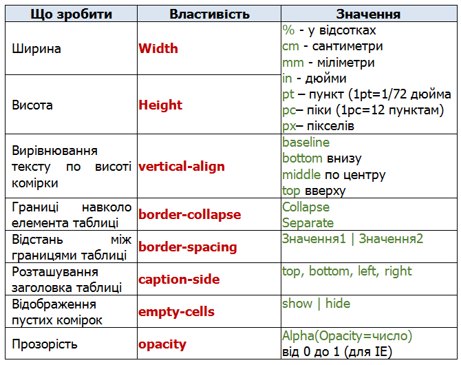
Приклад 4.1. За допомогою селекторів table – вказати ширину таблиці 50% та встановити її по центру; th – кольорова заливка, текст білий.
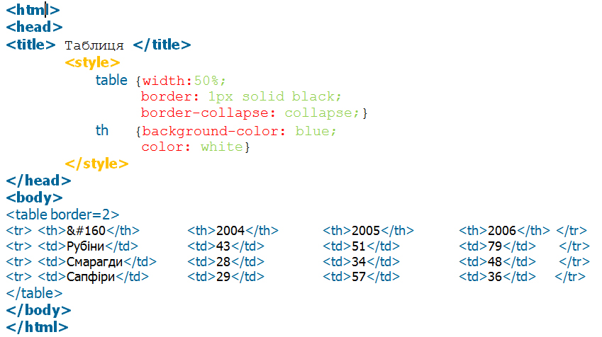
Результат:
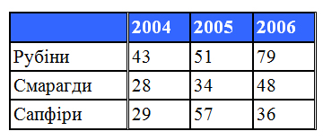
Приклад 4.2. Властивості таблиці
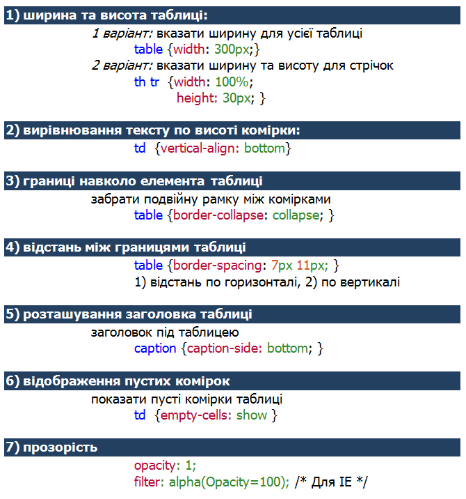
| 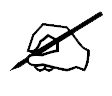 | Завдання 4.1. За допомогою селекторів table, tr, td зробити зовнішні лінії білими, а внутрішні кольоровими |
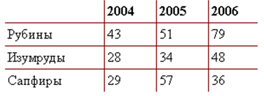
Завдання 4.2. За допомогою класів селектору tr встановити різний колір заливок рядків, форматування тексту, висота стрічок у 20px. |
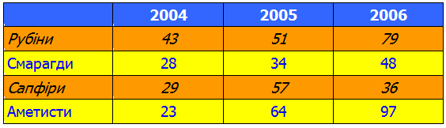
Завдання 4.3. За допомогою класу селектору table зробити зовнішні лінії таблиці подвійними з заокругленими кутами: |
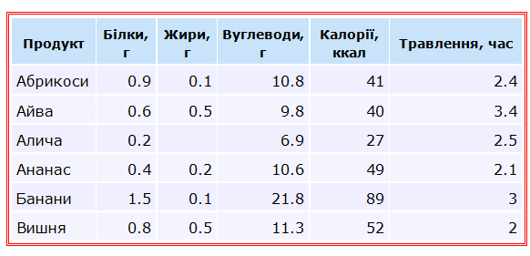